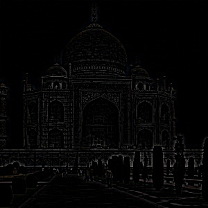
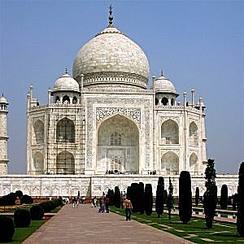

Original: Taj Mahal

High Frequencies Extracted

Sharpened Image
I implemented convolution using only NumPy. The outputs were compared with scipy.signal.convolve2d. Runtime was measured using the notebook output. The runtime with four for loops is 2min and 16sec. The runtime with two for loops is 12.1 seconds. For comparison, using scipy's conv2d took 0.8 seconds.These tests used the box filter for the kernel. My implementation for padding utlizes np.pad and padds it with one layer of ones around the image. Techincally it can't be adjust but can do different implementations for the padding. I modified the padding in my conv2d method to be more versatile in my part 2 implementations. Scipy's padding provides handling for boundary conditions such as `'symm'` (mirroring), `'wrap'`, and `'fill'`, making it more flexible and efficient for most practical use cases.
My implementation supports padding with reflect, constant, and edge modes.
I tuned the threshold to balance edge detection and noise suppression. 85 is the best threshold i found. Any higher and the edges it can find end up breaking up. Any lower and theres a good amount of noise..
To reduce noise in edge detection, we first smoothed the image using a cv2.getGaussianKernel-based 2D Gaussian filter.
I then computed gradients using finite difference filters (Dx, Dy) on the blurred image.
This produced much cleaner edge maps than applying derivatives directly to the raw image. I didn't need as high of a threshold value.
I also constructed Derivative of Gaussian (DoG) filters by convolving the Gaussian filter with Dx and Dy to create DoGx and DoGy. These were then applied directly to the image in a single convolution step. This approach gave identical results to the two-step method, confirming the linearity of convolution.
The unsharp mask sharpens an image by amplifying high frequencies. It's computed as: sharpened = original + alpha * (original - blurred). As you increase the alpha, the edges more prominent. Image 1 is the taj mahal and you can see the edges more amplified. The second set of images, its a little harder to tell but if you look closely the edges are more darker. The third set of images was I test I ran where I took a sharp image blurred it, and then sharpened it again to see if the final sharpened image would be the same as the original image. I found that as long as the standard deviation is the same between the gaussian blur that was done to blur the image, and the gaussian blur used in the sharpen function, the image looks identical between the original and the blur + sharpened image.
Hybrid images combine high-frequency from one image and low-frequency from another. I aligned images, applied Gaussian filters, and tuned sigma values for the high and low frequencies. The first pair of images was provided by CS180. The other sets of images were pictures I had of my friends, I had aligned.


I implemented Laplacian pyramid blending. The process uses Gaussian and Laplacian stacks of both images and the mask. I created a vertical and circular mask. I modified my Conv2d method from part 1 to support convolutions for color images. In order to create a smoother blending, I modifed the mask to have a blend width which transition the values smoother from 1 to 0, from each side of the mask. In addition I increase the sigma value of the gaussian kernel as I created more stacks. This made the blending process smoother.


This blend uses an circular mask. I changed the radius ratio between the Earth and Mars between both images